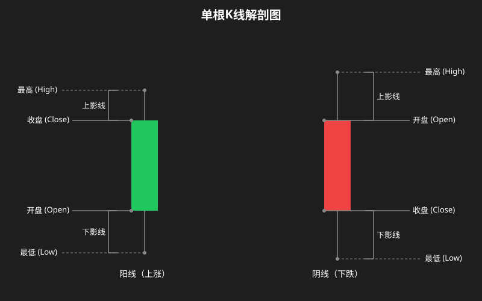
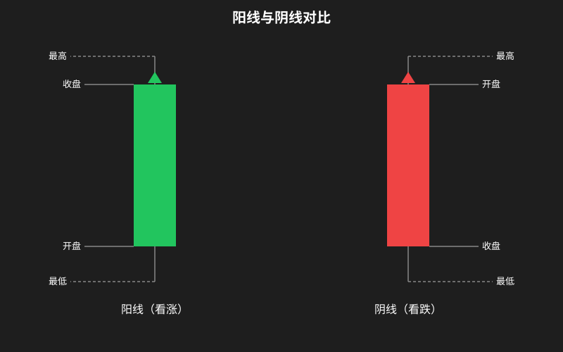
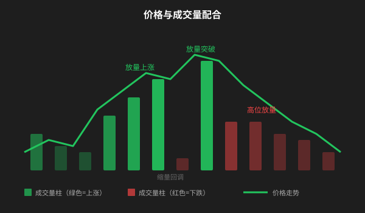

K 线图入门
什么是 K 线？
K 线（Candlestick，又称蜡烛图）是股票、期货、外汇等金融市场最常用的价格图表。一根 K 线记录的是一个时间单位内的价格变化——比如一天、一小时、或一周。
K 线四要素
每一根 K 线包含四个关键价格信息：

| 要素 | 含义 |
|---|---|
| 开盘价 | 该时间周期开始时的第一笔成交价 |
| 收盘价 | 该时间周期结束时的最后一笔成交价 |
| 最高价 | 该时间周期内成交的最高价格 |
| 最低价 | 该时间周期内成交的最低价格 |
阳线 vs 阴线
阳线（红色 / 空心）

- 收盘价 > 开盘价 → 价格上涨
- 实体越大，上涨力度越强
阴线（绿色 / 实心）
- 收盘价 < 开盘价 → 价格下跌
- 实体越大，下跌力度越强
⚠️ 中美颜色习惯差异
| 地区 | 阳线（涨） | 阴线（跌） |
|---|---|---|
| 中国（A股） | 🔴 红色 | 🟢 绿色 |
| 美国（美股） | 🟢 绿色 | 🔴 红色 |
看盘软件通常可以自定义颜色。关键是记住：实体颜色代表涨跌方向，不是绝对标准。
影线与实体的含义
上影线表示冲高受阻（价格曾涨到高处但被压回），下影线表示探底回升（价格曾跌到低处但被拉起），实体则是开盘到收盘之间的核心价格区间。
| 部位 | 出现情形 | 市场含义 |
|---|---|---|
| 长上影线 | 冲高回落 | 上方抛压重，买方力量不足 |
| 长下影线 | 探底回升 | 下方有支撑，卖方力量衰竭 |
| 实体很长 | 单边强走势 | 一方完全主导 |
| 实体很短 | 多空博弈 | 双方力量接近（需结合影线判断） |
K 线周期（时间级别）
同一个时间段，不同周期的 K 线看到的细节不同：
| K线周期 | 每根K线代表 | 适合分析 |
|---|---|---|
| 年 K / 季 K | 一整年/一季度 | 超长期趋势、牛熊分界 |
| 月 K | 一个月 | 长期趋势、主力建仓 |
| 周 K | 一周（周一~周五） | 中期趋势、波段方向 |
| 日 K | 一个交易日 | 日常分析、买卖点判断 |
| 60 分钟 K | 一小时 | 短线操作、日内波段 |
| 30 分钟 / 15 分钟 K | 半小时 / 15 分钟 | 超短线、T+0 操作 |
| 5 分钟 / 1 分钟 K | 5 分钟 / 1 分钟 | 极短线、盯盘高频交易 |
原则：大周期定方向，小周期找买点。 比如日 K 趋势向上时，在 60 分钟 K 的回调中找入场机会更安全。
怎么看成交量配合
成交量是 K 线分析的”放大器”——没有成交量的 K 线形态可靠性要大打折扣。
价格走势 K线 + 成交量柱状图 = 更可靠的判断
常见量价关系
| 现象 | 含义 |
|---|---|
| 价涨 + 量增 | ✅ 上涨健康，买方踊跃，趋势可能持续 |
| 价涨 + 量缩 | ⚠️ 上涨乏力，缺少跟风盘，可能见顶 |
| 价跌 + 量增 | ⚠️ 恐慌抛售，或主力出货，下跌可能持续 |
| 价跌 + 量缩 | ✅ 下跌减弱，卖盘枯竭，可能接近底部 |
| 放量突破 | 🟢 突破关键价位得到确认，可信度高 |
| 缩量回调 | 🟢 回调中没有恐慌盘，趋势可能继续 |
一句话口诀
涨时放量是健康，跌时缩量是洗盘；高位放量要警惕，低位放量是转机。
综合示意图
下面是一段包含价格走势和成交量配合的示意图（日 K 级别），理解它们的关系是分析的基础。

小贴士：初学 K 线不需要记住所有形态。先从看懂单根 K 线的四要素入手，再逐步学习组合形态。每天花 5 分钟看几只股票的日 K 线，两周就能基本掌握。